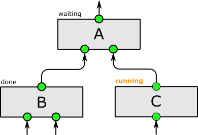

In Aquarium, protocols are expressed as executable code. Every formula,
every inventory interaction, and every step is computed on the fly, yielding
easy to follow instructions for your laboratory technicians. As a result,
Protocols built in Aquarium are easy to reproduce and share, and they
generate chain of custory information for every item and datum in your lab.
To learn more about authoring your own protocols, see the
protocol tutorial
.
In Aquarium, every protocol is wrapped in a Unit Operation that has a
formally specified set of input and output sample types. By stringing together
operations, you can build very complex experimental worlflows. These workflows
are executable as well and you can monitor their progress, see the data they
produce, watch as inventory items are created and stored, and get detailed logs
that describe every step of your workflow. To learn more about how to build
workflows, see the
Designer documentation
.

Aquarium allows a researcher to specify precisely how to perform an
experimental protocol so that lab personnel will run the protocol the same way,
every time.
Protocols encode how to manipulate Aquarium's inventory system (LIMS),
compute formulae such as volumes, molarities, temperatures, and timing, as well
as present lab technicians with images and detailed instructions.
Protocols also define formal unit operations with typed inputs and outputs –
allowing the researcher to construct a complex workflow by linking an output
sample of one protocol to an input of another using the Aquarium graphical
workflow designer.
In the lab, protocols and processes are scheduled and presented to
technicians on touchscreen monitors placed throughout. Every step is logged: who
performed the step, which items were used, what data was gathered by which
instruments, and how long it took – data that can be used to debug and improve
the experiment. More importantly, Aquarium provides a complete, executable
description of the results obtained – one that could be used by another lab
running Aquarium to reproduce the result.
Aquarium was created in the
Klavins Lab
and is the operating system of the
UW BIOFAB
at the University of Washington.